Creamos una carpeta que se llame “Dockerapache”.
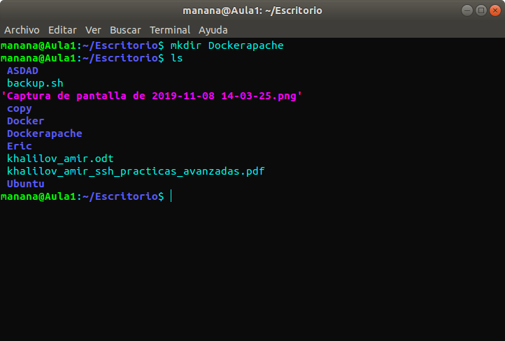Dentro de Dockerapache creamos otra carpeta que se llame “public-html”.
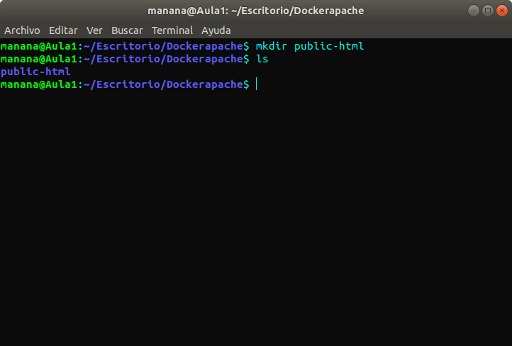Dentro de public-html creamos un fichero html llamado “index.html” con los siguientes datos.
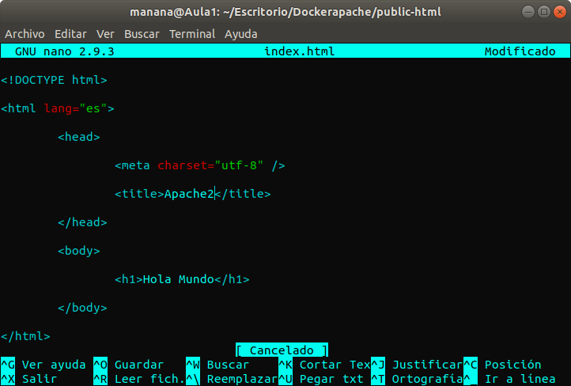Ahora dentro de Dockerapache creamos un fichero llamado “Dockerfile” con el siguiente contenido.
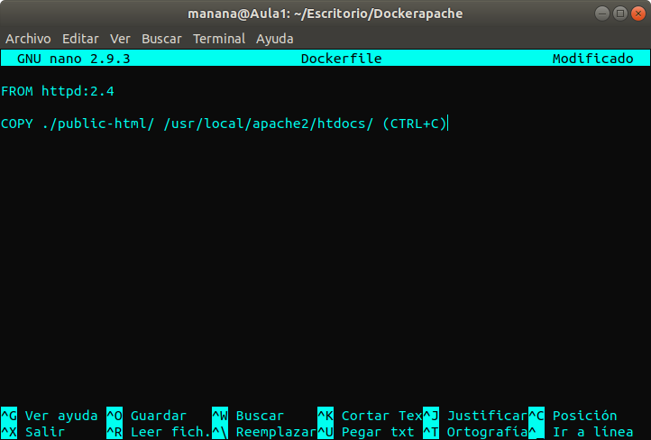El siguiente paso es generar la imagen que nos servirá de plantilla para nuestros contenedores.
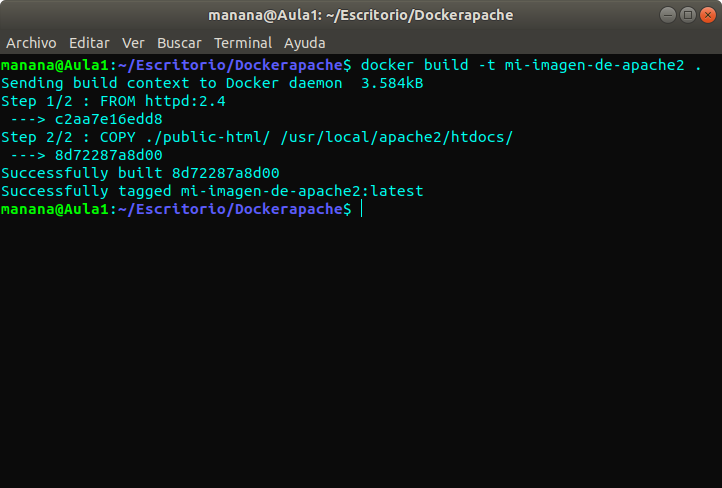Ahora podemos crear un contenedor "vivo", lo creamos y lanzamos.
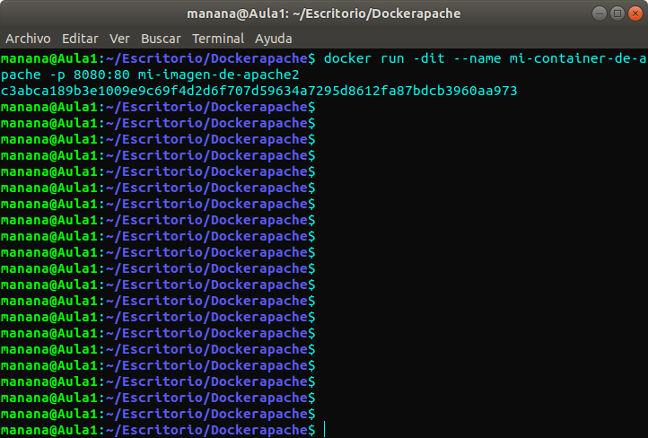Rehacemos la imagen.
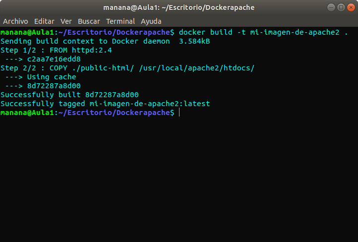Pararamos el contenedor.
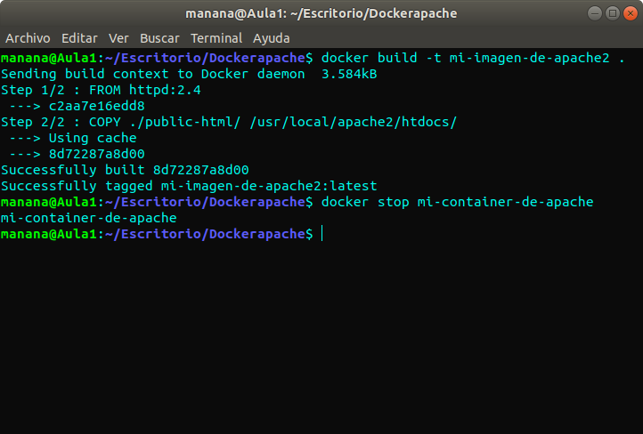Borrarmos el contenedor.
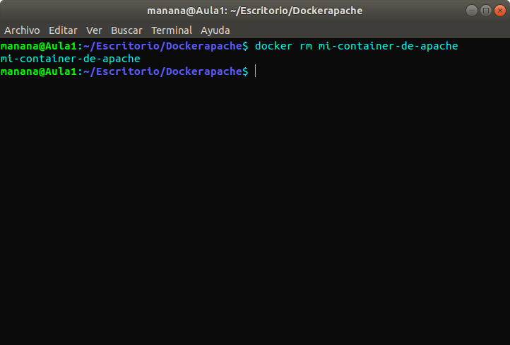Creamos de nuevo el contenedor y lo lanzamos.
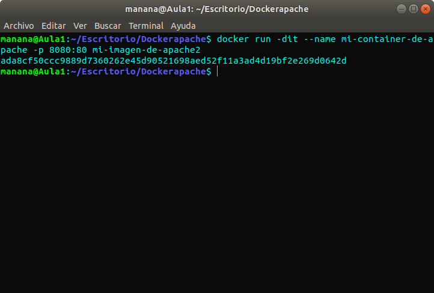Copiamos el archivo de configuración del contenedor a la máquina física.
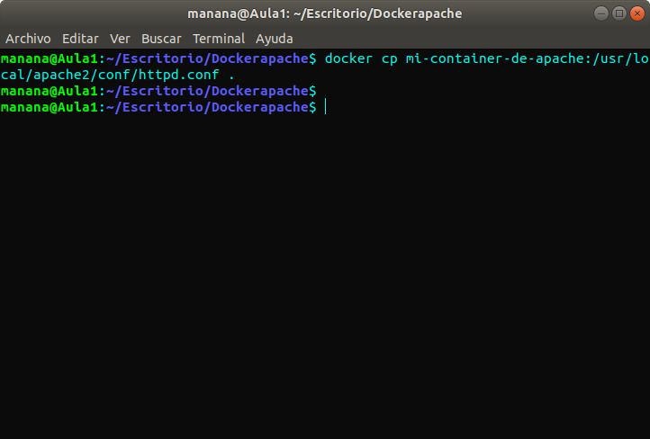Modificamos el Dockerfile y nos tiene que quedar lo siguiente.
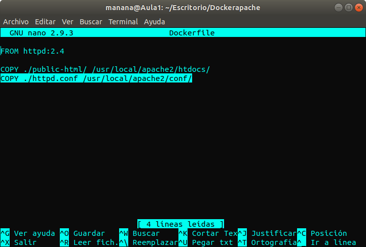Primero lo instalamos con el siguiente comando.
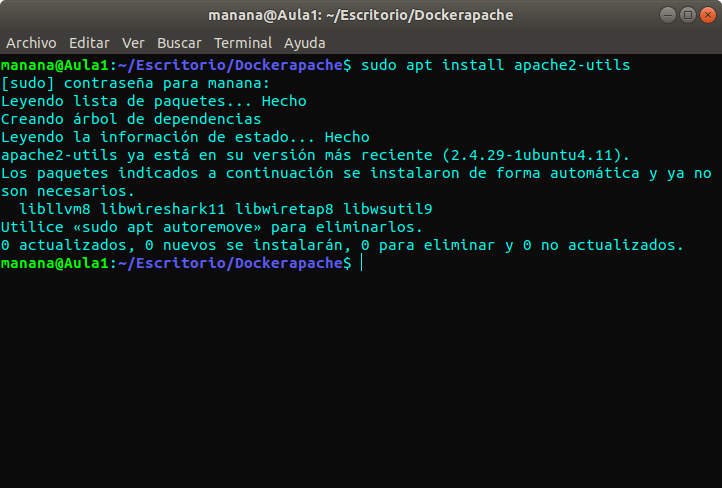Donde está el dockerfile creamos “htpasswd”.
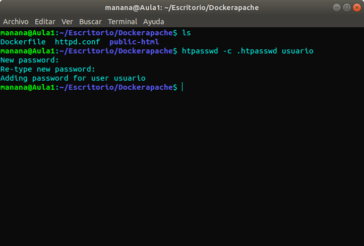Modificamos el Dockerfile y nos tiene que quedar lo siguiente.
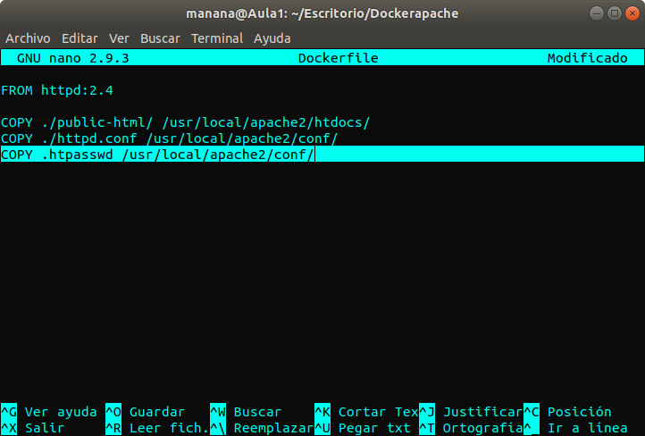Añadimos lo siguiente al final del fichero httpd.conf
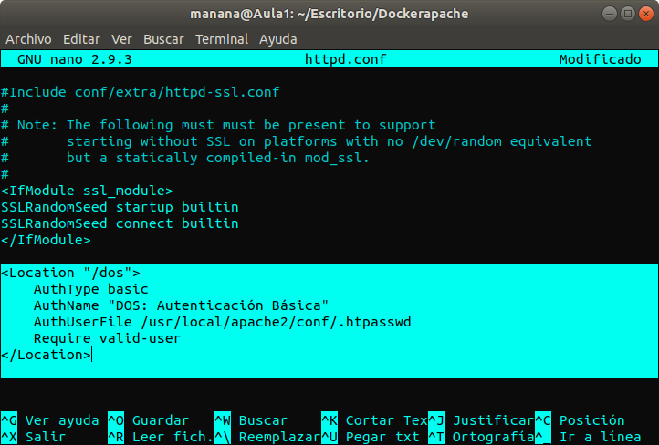Ahora vamos a crear un script para automatizar la actualización de los contenedores llamado “reload.sh”.
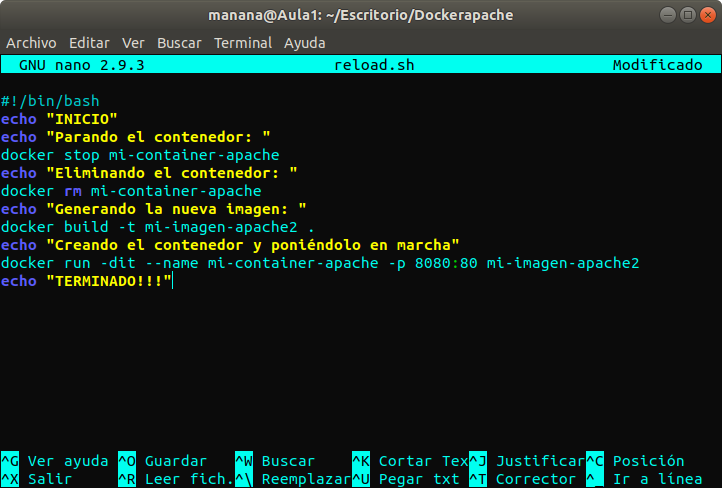Primero creamos el archivo de contraseñas llamado “htdigest”.
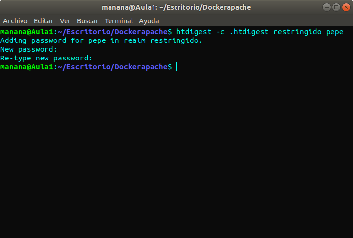Modificamos el Dockerfile y nos tiene que quedar lo siguiente.
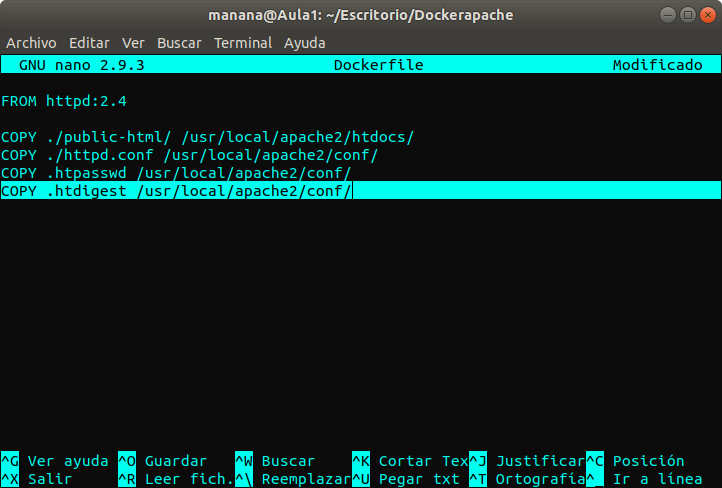Modificamos el httpd.conf y añadimos al final lo siguiente.
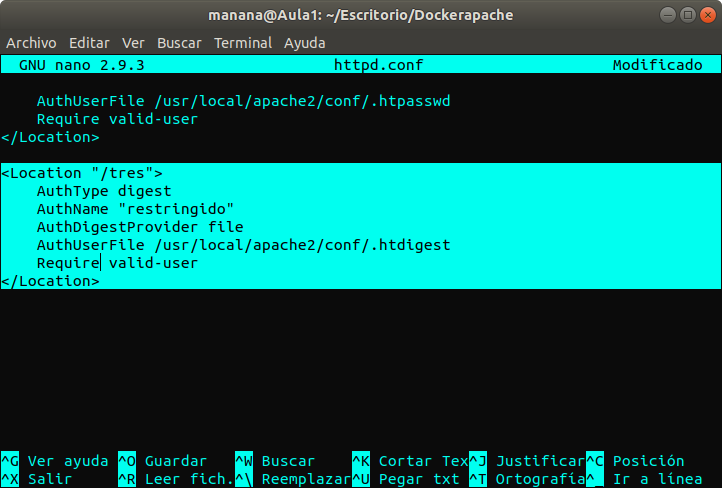Modificamos el reload.sh y se nos tiene que quedar lo siguiente.
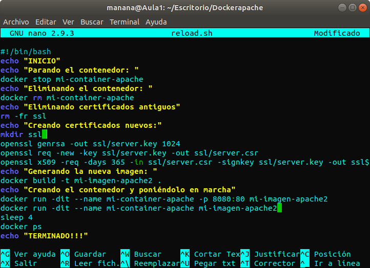Modificamos el Dockerfile y nos tiene que quedar lo siguiente.
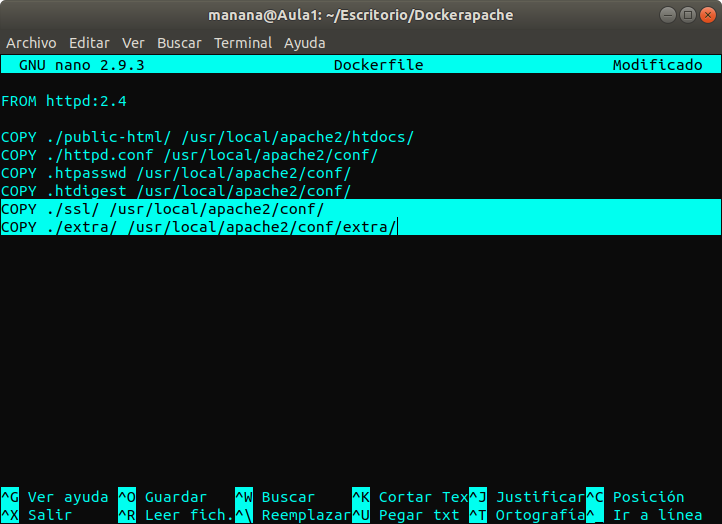Modificamos el httpd.conf y añadimos al final lo siguiente.
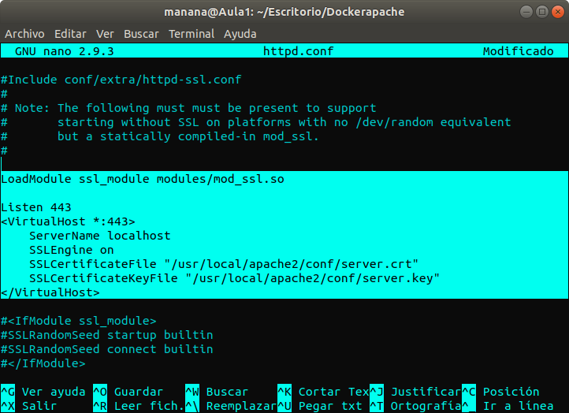Ejecutamos el script reload y ya estaría corriendo nuestro contenedor apache.
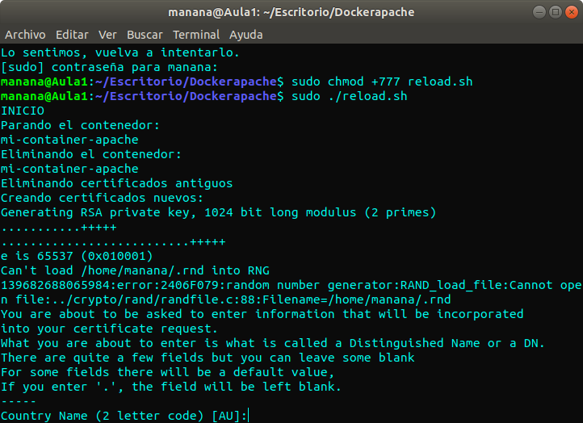